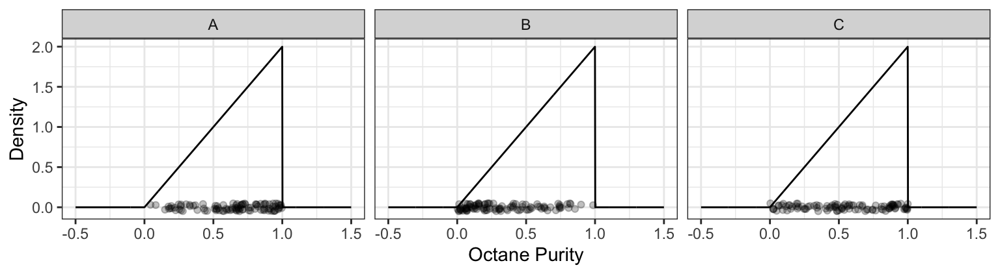
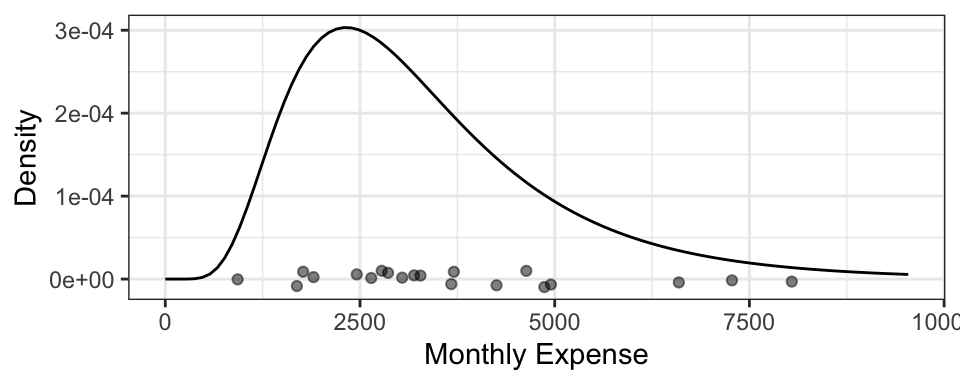
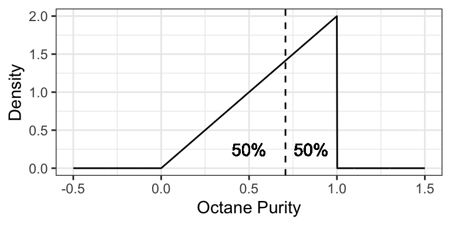
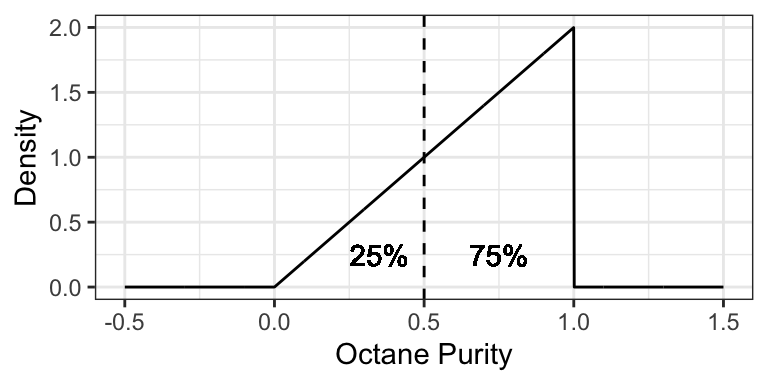
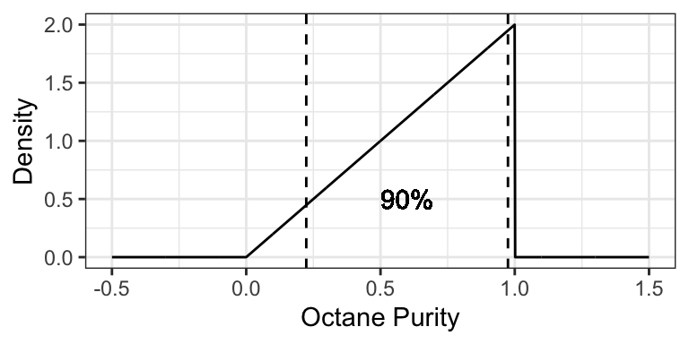
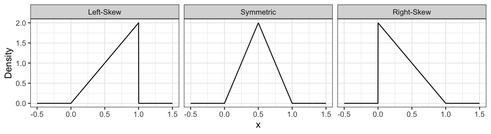

Lecture 5 Continuous Distributions
5.1 Roadmap
The first two weeks covered the following concepts:
- Distributions, and ways of describing a distribution.
- Simulation concepts.
- Bivariate concepts.
All of this was in the context of discrete random variables. For the next two weeks, we will broaden our discussion on these topics, but in the context of continuous random variables.
5.2 Learning Objectives
From today’s lecture, students should be able to:
- Differentiate between continuous and discrete random variables.
- Calculate and interpret probabilistic quantities (mean, quantiles, prediction intervals, etc) for a continuous random variable
- Match a distribution to sampled data
A note on integrals: Working with continuous random variables sometimes involves integrating some functions. The most we will ever ask you to integrate are functions that are linear, because they can be computed using the formula for the area of a triangle and area of a rectangle. This is not because it’s “too hard” to compute integrals, but because there’s not much pedagogical value in it, especially because we’re gearing this course towards the usefulness of probability in data science.
5.3 Continuous random variables (10 min)
What is the current water level of the Bow River at Banff, Alberta? How tall is a tree? What about the current atmospheric temperature in Vancouver, BC? These are examples of continuous random variables, because there are an uncountably infinite amount of outcomes. Discrete random variables, on the other hand, are countable, even if there are infinitely many outcomes, because each outcome can be accounted for one-at-a-time by some pattern.
Example: The positive integers are discrete/countable: just start with 1 and keep adding 1 to get 1, 2, 3, etc., and that covers all possible outcomes. Positive real numbers are not countable because there’s no way to cover all possibilities by considering one outcome at a time.
It turns out that it’s trickier to interpret probabilities for continuous random variables, but it also turns out that they’re in general easier to work with.
Not all random variables with infinitely many outcomes are continuous. Take, for example, a Poisson random variable, that can take values \(0, 1, 2, \ldots\) with no upper limit. The difference here is that a smaller range of values does have a finite amount of variables. By the way, this type of infinity is called “countably infinite”, and a continuous random variable has “uncountably infinite” amount of outcomes.
In practice, we can never measure anything on a continuous scale, since any measuring instrument must always round to some precision. For example, your kitchen scale might only measure things to the nearest gram. But, these variables are well approximated by a continuous variable. As a rule of thumb, if the difference between neighbouring values isn’t a big deal, consider the variable continuous.
Example:
You’d like to get a handle on your monthly finances, so you record your total monthly expenses each month. You end up with 20 months worth of data:
## [1] "$1903.68" "$3269.61" "$6594.05" "$1693.94" "$2863.71" "$3185.01"
## [7] "$4247.04" "$2644.27" "$8040.42" "$2781.11" "$3673.23" "$4870.13"
## [13] "$2449.53" "$1772.53" "$7267.11" "$938.67" "$4625.33" "$3034.81"
## [19] "$4946.4" "$3700.16"Since a difference of $0.01 isn’t a big deal, we may as well treat this as a continuous random variable.
Example:
Back in the day when Canada had pennies, you liked to play “penny bingo”, and wrote down your winnings after each day of playing the game with your friends. Here are your net winnings:
## [1] 0.01 -0.01 0.02 0.01 0.04 0.02 -0.03 -0.01 0.05 0.04Since a difference of $0.01 is a big deal, best to treat this as discrete.
5.4 Density Functions (20 min)
In the discrete case, we were able to specify a distribution by indicating a probability for each outcome. Even when there’s an infinite amount of outcomes, such as in the case of a Poisson distribution, we can still place a non-zero probability on each outcome and have the probabilities sum to 1 (thanks to convergent series). But an uncountable amount of outcomes cannot be all accounted for by a sum (i.e., the type of sum we denote by \(\sum\)), and this means that continuous outcomes must have probability 0.
Example: The probability that the temperature in Vancouver tomorrow will be 18 degrees celcius is 0. In fact, any temperature has a probability of 0 of occurring.
While individual outcomes have zero probability, ranges can have non-zero probability. We can use this idea to figure out how “dense” the probability is at some areas of the outcome space. For example, if a randomly selected tree has a 0.05 probability of being within 0.1m of 5.0m, then as a rate, that’s about 0.05/(0.1m) = 0.5 “probability per meter” here. Taking the limit as the range width \(\rightarrow 0\), we obtain what’s called the density at 5m.
The density as a function over the outcome space is called the probability density function (pdf), usually abbreviated to just the density, and denoted \(f\). Sometimes we specify the random variable in the subscript, just to be clear about what random variable this density represents – for example, \(f_X\) is the density of random variable \(X\).
You’ll see that the density is like a “continuous cousin” of the probability mass function (pmf) in the case of discrete random variables. We’ll also see in a future lecture that there are some random variables for which neither a density nor a pmf exist.
We can use the density to calculate probabilies of a range by integrating the density over that range: \[P(a < X < b) = \int_a^b f(x) \text{d}x.\] This means that, integrating over the entire range of possibilities should give us 1: \[\int_{-\infty}^\infty f(x) \text{d}x = 1\] This integral corresponds to the entire area under the density function.
5.4.1 Example: “Low Purity Octane”
You just ran out of gas, but luckily, right in front of a gas station! Or maybe not so lucky, since the gas station is called “Low Purity Octane”. They tell you that the octane purity of their gasoline is random, and has the following density:

- What’s the probability of getting 25% purity? That is, \(P(\text{Purity} = 0.25)\)?
- The density evaluates to be >1 in some places. Does this mean that this is not a valid density? Why is the density in fact valid?
- Is it possible for the density to be negative? Why or why not?
- What’s the probability of getting gas that’s \(<50\%\) pure? That is, \(P(\text{Purity} < 0.5)\)?
- What’s the probability of getting gas that’s \(\leq 50\%\) pure? That is, \(P(\text{Purity} \leq 0.5)\)?
- What’s the support of this random variable? That is, the set of all outcomes that have non-zero density?
- You decide to spend the day at Low Purity Octane, measuring the octane purity for each customer. You end up getting 100 observations, placing each measurement along the x-axis. Which of the following plots would be more likely, and why?

5.4.2 Example: Monthly Expenses
It turns out your monthly expenses have the following density, with your 20 observations plotted below it:

5.5 Distribution Properties (25 min)
With continuous random variables, it becomes easier to expand our “toolkit” of the way we describe a distribution / random variable. As before, each property always has a distribution-based definition that gives us an exact/true value, and sometimes has an empirically-based (data-based) definition that gives us an approximate value, but that approaches the true value as more and more observations are collected.
5.5.1 Mean, Variance, Mode, and Entropy (again) (5 min)
These are the properties of a distribution that we’ve already seen, but they do indeed extend to the continuous case.
Mode and entropy can be defined, but since these ignore the numeric property of continuous random variables, they tend to not be used. Also, these properties don’t really have a natural empirical version.
- Mode: The outcome having the highest density. That is, \[\text{Mode} = {\arg \max}_x f(x).\]
- Entropy: The entropy can be defined by replacing the sum in the finite case with an integral: \[\text{Entropy} = \int_x f(x) \log f(x) \text{d}x.\]
Instead, we prefer to describe a continuous random variable using properties that inform us about distances. The mean and variance are two such measures of central tendency and uncertainty, where the only difference with a continuous random variable is in the distribution-based definition, where the sum becomes an integral.
- Mean: The distribution-based definition is \[E(X) = \int_x x \, f(x) \text{d}x.\]
- You may later learn that this is a point that is “as close as possible” to a randomly generated outcome, in the sense that its expected squared distance is as small as possible.
- Ends up being the “center of mass” of a probability density function, meaning that you could “balance” the density function on this single point without it “toppling over due to gravity”.
- Probably best interpreted as the long-run sample average (empirical mean).
- Variance: The distribution-based definition is \[\text{Var}(X) = E \left( (X - \mu_X)^2 \right) = \int_x (x - \mu_X) ^ 2 \, f(x) \text{d}x,\] where \(\mu_X = E(X)\). While the mean minimizes the expected squared distance to a randomly generated outcome, this is the expected squared distance.
Going back to the octane purity example from Low Purity Octane gas station:
- The mode is 1 (the highest purity possible!).
- The entropy works out to be \[\int_0^1 2x \log(2x) \text{d}x \doteq 0.1931.\]
- The mean ends up being not a very good purity (especially as compared to the mode!), and is \[\int_0^1 2x^2 \text{d}x = \frac{2}{3}.\]
- The variance ends up being \[\int_0^1 2 x \left(x - \frac{2}{3}\right)^2 \text{d}x = \frac{1}{18}.\]
5.5.2 Median (5 min)
The median is the outcome for which there’s a 50-50 chance of seeing a greater or lesser value. So, its distribution-based definition satisfies \[P(X \leq \text{Median}(X)) = 0.5.\] Its empirically-based definition is the “middle value” after sorting the outcomes from left-to-right.
Similar to the mean, you may later learn that the median is a point that is “as close as possible” to a randomly generated outcome, in the sense that its expected absolute distance is as small as possible.
The median is perhaps best for making a single decision about a random outcome. Making a decision is simplest when the possibilities are reduced down to two equally likely outcomes, and this is exactly what the median does. For example, if the median time it takes to complete a hike is 2 hours, then you know that there’s a 50-50 chance that the hike will take over 2 hours. If you’re instead told that the mean is 2 hours, this only tells us that the total amount of hiking time done by a bunch of people will be as if everyone takes 2 hours to do the hike – this is still useful for making a decision about whether or not you should do the hike, but is more convoluted.
Using the purity example at Low Purity Octane, the median is about 0.7071:

5.5.3 Quantiles (5 min)
More general than a median is a quantile. The definition of a \(p\)-quantile \(Q(p)\) is the outcome that has a \(1-p\) probability of exceedance, or equivalently, for which there’s a probability \(p\) of getting a smaller outcome. So, its distribution-based definition satisfies \[P(X \leq Q(p)) = p.\] The median is a special case, and is the 0.5-quantile.
An empirically-based definition of the \(p\)-quantile is the \(np\)’th largest (rounded up) observation in a sample of size \(n\).
Some quantiles have a special name:
- The 0.25-, 0.5-, and 0.75-quantiles are called quartiles.
- Sometimes named the first, second, and third quartiles, respectively.
- The 0.01-, 0.02, …, and 0.99-quantiles are called percentiles.
- Sometimes the \(p\)-quantile will be called the \(100p\)’th percentile; for example, the 40th percentile is the 0.4-quantile.
- Less commonly, there are even deciles, as the 0.1, 0.2, …, and 0.9-quantiles.
For example, the 0.25-quantile of octane purity at Low Purity Octane is 0.5, since the area to the left of 0.5 is 0.25:

5.5.4 Prediction Intervals (5 min)
It’s often useful to communicate an interval for which a random outcome will fall in with a pre-specified probability \(p\). Such an interval is called a \(p \times 100\%\) Prediction Interval.
Usually, we set this up in such a way that there’s a \(p/2\) chance of exceeding the interval, and \(p/2\) chance of undershooting the interval. You can calculate the lower limit of this interval as the \((1 - p)/2\)-Quantile, and the upper limit as the \(1 - (1 - p)/2\)-Quantile.
Example: a 90% prediction interval for the purity of gasoline at “Low Purity Octane” is [0.2236, 0.9746], composed of the 0.05- and 0.95-quantiles.

5.5.5 Skewness (5 min)
Skewness measures how “lopsided” a distribution is, as well as the direction of the skew.
- If the density is symmetric about a point, then the skewness is 0.
- If the density is more “spread-out” towards the right / positive values, then the distribution is said to be right-skewed (positive skewness).
- If the density is more “spread-out” towards the left / negative values, then the distribution is said to be left-skewed (negative skewness).

It turns out that for symmetric distributions, the mean and median are equivalent. But otherwise, the mean tends to be further into the skewed part of the distribution. Using the monthly expense example, the mean monthly expense is $3377.87, which is bigger than the median monthly expense of $2980.96.

Formally, skewness can be defined as \[\text{Skewness} = E \left( \left( \frac{X - \mu_X}{\sigma_X} \right) ^ 3 \right),\] where \(\mu_X = E(X)\) and \(\sigma_X = \text{SD}(X)\).
For example, the octane purity distribution is left-skewed, and has a skewness of \[\int_0^1 2 x \left(\sqrt{18} (x - 2/3) \right) ^ 3 \text{d}x \doteq -0.5657.\]
5.5.6 Examples
For the following situations, which quantity is most appropriate, and why?
- You want to know your monthly expenses in the long run (say, for forecasting net gains after many months). How do you communicate total expense?
- You want to ensure you put enough money aside on a given month to ensure you’ll have enough money to pay your bills. How much should you put aside?
- How should you communicate the cost of a typical house in North Vancouver?